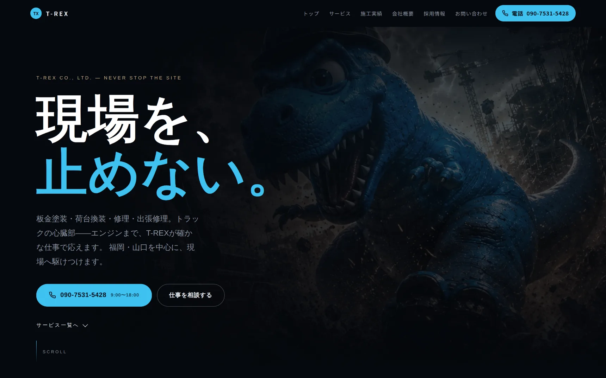

DEPTH 600.0M — SEABED
潜るのは、ここまでです。
ここから下が、この会社です。
つくったもの、できること、進め方。海は、いちばん下でもう一度だけ出てきます。
WORKS
制作実績



2件と、このサイト。
これまでにつくったのは2件です。数は多くありません。そのかわり、どんな会社で、何をつくって、どこをどう動かしたのかを1件ずつ書いています。
制作実績
- GARAGE BeCool ↗
- コーポレートサイト / 中古車販売・整備 / 福岡県北九州市
- T-REX CO., LTD. ↗
- コーポレートサイト / 板金塗装・荷台換装・修理・出張修理 / 福岡・山口
- 制作実績を見る ↗
- 2件の画面と、このサイトの制作記。
THE FOURTH
3件目は、いま見ているこのサイトです。
水面から海底600メートルまで、さっき潜ってきた景色は写真でも動画でもありません。ブラウザがその場で描いています。
使っているのはthree.jsとWebGL——ブラウザの中で立体を描くための技術です。スマートフォンでも動くように、端末の性能に合わせて描く量を変えています。
つくれるものを説明するより、実際に動かして見てもらうほうが早いと思ったので、自分のサイトでやりました。何をどう組んだかは実績ページに書いています。
- 汀ノ庭（このサイト）
- コーポレートサイト / ホームページ制作 / 福岡県北九州市
- このサイトの制作記を読む
- 海の描き方、スマホでの動かし方まで。
SERVICE
できること
ホームページをつくる。AIを入れる。そのまわりを、まとめて。
ホームページをつくることと、そこにAIを入れること。この2つが軸です。載せる写真が無い、文章が書けない、公開したあとの手入れが心配——そのあたりも含めて引き受けます。
つくり方は2通りあります。ひとつは、公開したあとに自分たちでお知らせや写真を差し替えられる形（WordPressという仕組みを使います）。もうひとつは、更新はこちらで引き受ける代わりに、表示が速く、見た目を自由に組める形です。どちらにするかは、更新をどれくらい自分たちでやりたいかを聞いてから決めます。用語は覚えなくて構いません。
つくる
- ホームページ制作
- 何を載せるかの相談から公開まで。スマホの幅で実際に開いて、読めるか・押せるか・横にずれないかを1ページずつ確かめてから渡します。
- ホームページのリニューアル
- 今のサイトを開いて、残す文章・撮り直す写真・作り直す仕組みを先に仕分けします。全部を捨てないための作業です。
- 1枚で伝えるページ（LP）の制作
- 上から読む順番だけで組む1枚のページ。読み終わりが問い合わせになるように、途中に置く見出しの順を決めます。
見せる
- 写真撮影・原稿づくり
- 載せる写真が無ければ撮ります。店内、車両、作業中の手元、働いている所。文章も、話してもらった内容をこちらで書き起こします。写真も文章も、事前に用意しておく必要はありません。
AIを入れる
- AI導入
- 自社の情報を読み込ませて、よく聞かれることに答える形で組み込みます。機能は全部載せず、実際に何を聞かれているかを聞いてから選びます。
見つけてもらう
- 検索対策（SEO）
- 検索した人が読む文章と、検索する機械が読む部分の両方を直します。順位を約束することはできないので、何をどう直したかは毎回そのまま出します。
- Googleビジネスプロフィール支援
- 地図と検索に出る会社の情報。営業時間、写真、説明文を書き直して、地図から道順や連絡先までたどり着ける状態にします。
公開したあと
- 公開後の更新・保守
- 文章や写真の差し替え、表示の崩れの手当て。どこまでを任せてもらうかは、更新の頻度を聞いてから決めます。
- ドメイン・サーバー関連
- サイトの住所（ドメイン）と置き場所（サーバー）の手配。契約や設定が分からなければ、手順をこちらで作って一緒に進めます。
やっていないこと
- ロゴ・印刷物・SNSの運用代行はやっていません
- ロゴのデザイン、チラシや名刺などの印刷物、SNSの毎日の投稿代行は請けていません。必要な場合、どこに頼めばいいかの相談には乗ります。
WHAT TO PREPARE
用意していただくもの
3つだけです。資料をつくって備えておく必要は、ありません。
- 一度、1〜2時間ほど話す時間
- 会社のこれまでと、いまやっていること。うまくまとめようとしなくて大丈夫です。こちらから質問していきます。一度で終わらなければ、何回かに分けても構いません。
- 手元にあるもの(あれば)
- 名刺、チラシ、これまでに撮った写真、今のホームページ。ばらばらでも構いません。無ければ、そこからつくります。
- 「違う」と言うこと
- 出したものを見て、しっくり来なければそう言ってください。言葉にできなくても、その反応が次の手がかりになります。
SCHEDULE
期間の目安
1枚で伝えるページ(LP)で3〜4週間、会社案内を数ページに分けたサイトで1〜2か月が目安です。写真撮影や原稿づくりから入る場合は、そのぶん前に時間を取ります。
先に決まっている予定があれば、最初に言ってください。逆算して、どこまでを公開時点で出すかを決めます。
RUNNING COST
公開したあとに、続けてかかるお金
つくって終わりではありません。置いておくためのお金が、毎年かかります。
ホームページは、公開したあとも「置き場所」と「住所」を借り続ける必要があります。ここはどこに頼んでも、自分でつくっても同じようにかかるものなので、先に全部並べておきます。
金額の目安は、相談のときにその場でお伝えします。ホームページの中身と、選ぶサービスによって変わるためです。こちらの判断で勝手に契約することはありません。かかるものは事前に全部お伝えして、入れるかどうかを一緒に決めてから進めます。
必ずかかるもの
- サーバー代・ドメイン代
- ホームページを置いておく場所(サーバー)と、その住所にあたる文字列(◯◯.comなど)の使用料です。どちらも1年ごとの更新で、公開している間はずっとかかります。契約はお客さまご自身の名義で取るのを基本にしていて、手続きはこちらで代わりに進めます。名義がご自身なら、あとで別のところに頼むことになっても、サイトごと持って行けます。
選んだ場合だけかかるもの
- AI機能を入れた場合の利用料
- 問い合わせの自動応答など、AIを使う機能を入れると、そのAIサービスへの利用料が月々かかります。使った量で変わる形が多いので、どのくらいで収まるかを見てから、入れるかどうかを決めます。入れなければ、この費用はかかりません。
- 続けて手を入れる場合の費用
- 公開後の更新やSEOの継続改善を頼む場合の費用です。毎月決まった額でお願いする月額と、必要なときだけ頼む都度の2つから選べます。頼まなくても、公開したホームページはそのまま動き続けます。
PHILOSOPHY
色は、現場でいちばん目に入るものから取ります。
デザインの決めごとは、たいていその会社の中にもう転がっています。外から持ってくる前に、そこを探します。
作業着、機械、看板、扱っている商品。決まったブランドカラーを持っていない会社でも、毎日その色を見ています。色だけの話ではありません。写真の選び方も、言葉づかいも、動きの量も、同じやり方で決めます。
見栄えのいい型に社名と写真を差し替えれば、ホームページの形にはなります。ただ、その型はどの会社にも入るように作られたものです。入れ替わるのは社名と写真で、並び順も余白も、次の会社のときと同じまま残ります。
GARAGE BeCoolのサービス紹介では、写真の上に文字を重ねていません。上に写真、下に説明と分けて、写真は写真のまま見せています。そこに写っているものを、文字で隠す理由が無かったからです。
だから、デザインを描き始める前に、見る時間と聞く時間を取ります。ここを飛ばすと、その会社らしさではなく、つくった側の好みが出るだけのホームページになります。
CONTACT
お問い合わせ
つくるものが決まっていなくても、話すところから始められます。
電話番号は載せていません。手が離せない時間があり、出られないまま折り返しを待たせるほうが失礼だと考えているためです。
「そろそろ何とかしたい」という段階で構いません。いまのホームページがあれば中身を見たうえで、できることと、やらなくていいことをお伝えします。相談だけで終わっても構いません。
打ち合わせはオンライン中心です。北九州とその周辺なら、店や現場を見に伺います。写真の撮影も同じ日にまとめられます。
連絡の方法（どれか一つで大丈夫です）
下の3つは、いま用意しているところです。開いたらここに出します。
- LINE 準備中
- 写真や資料もそのまま送れます。文章にまとめなくても、思いついた順で構いません。
- フォーム 準備中
- 書いて送るだけ。項目は多くありません。下の3つも最初から項目に入れてあるので、選ぶだけで済みます。
- メール 準備中
- 社内で回覧したいときや、資料を添えたいときに。